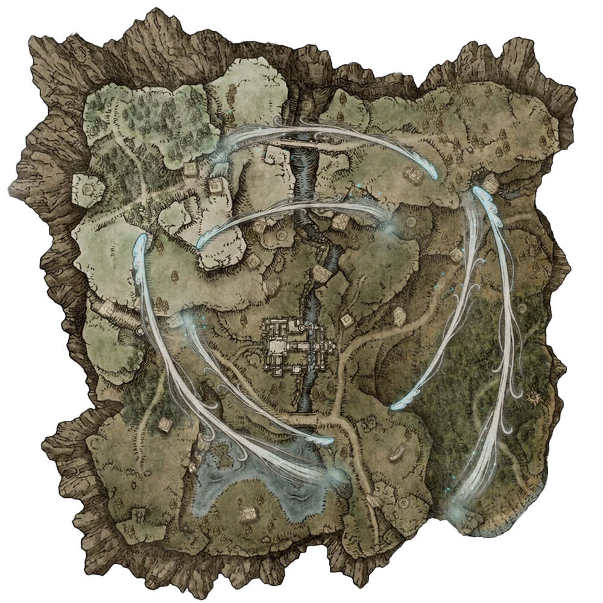

NIGHTREIGN
城堡
地下
-
主要
-
樓頂
-
夜晚
第一夜
-
第二夜
-
特殊
第一天
-
第二天
-
目標王
清除地圖
重置全部

請選擇地形，放置圖標
×
⚙
?
SETTINGS
LANGUAGE
中文
EN
INPUT MODE
MOUSE
TOUCH
Click outside to close
WELCOME / 更新公告
# DLC content is currently unavailable.
# Keyboard and mouse mode recommended - Completely redesigned the overall appearance. [Version 1.03.2]
開始使用
操作說明
OK